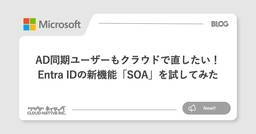
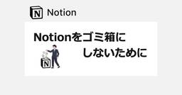
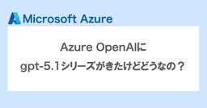
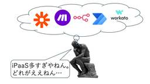

CloudNative Inc. BLOGs
https://blog.cloudnative.co.jp
株式会社クラウドネイティブのブログ。情報システムに関するマニアックな記事から、ちょっと変わった？ 社風までざっくばらんにご紹介。
フィード

AD同期ユーザーもクラウドで直したい！Entra IDの新機能「SOA」を試してみた
CloudNative Inc. BLOGs
ごきげんよう、IDチームのわかなです！ これまで、Active Directory（AD）からEntra IDへ同期しているユーザーやグループは、「ADがマスタ」であるため、Entra ID側では属性の編集やメンバーの追 […]
1日前
Microsoft 365にもWebhookはありまぁす！【Graph API change notifications】
CloudNative Inc. BLOGs
はじめに こんにちは。最近オーツラテにハマってるすかんくです。運用支援チームの2025年Advent Calendar、11日目になります。 Cloudnative IRS Advent Calendar 2025 – […]
2日前

Notionをゴミ箱にしないために
CloudNative Inc. BLOGs
みなさんこんにちは〜、運用支援チームの大友です。アドベントカレンダーとしては10日目、私は2回目の投稿になります。 はじめに みなさんGIGOって知ってますか？ Garbage In, Garbage Outの略語で、ゴ […]
3日前
NotionだけでSFA/CRMを作ろうとしたら、考えることが多すぎてNotionの解説どころじゃなくなった話
CloudNative Inc. BLOGs
どーもばるすです。 アドベントカレンダー2025、9日目の記事です。（予約公開を入れておいたはずなんですが、設定ミスってました） Cloudnative IRS Advent Calendar 2025 – Advent […]
4日前

Azure OpenAIにgpt-5.1が来たけどどうなの？
CloudNative Inc. BLOGs
はじめに こんにちは、俊介です。 2025アドベントカレンダー8日目担当です！ Cloudnative IRS Advent Calendar 2025 – Adventar 僕は最近のAIのトレンドだったり、ちょっと前 […]
5日前
全員集合！クラウドネイティブ2025大忘年会レポート📸
CloudNative Inc. BLOGs
はじめに こんにちは！Suzukaです！ いよいよ12月に突入しましたが、皆様いかがお過ごしですか？ 12月といえば忘年会シーズン。 12月5日、ついに開催しました… クラウドネイティブ大忘年会2025！ ご存知の方も多 […]
5日前

iPaaSどれがええの？ 1
1
CloudNative Inc. BLOGs
はじめに どうも、たにあんです。運用支援チーム Advent Calendar7日目です。Cloudnative IRS Advent Calendar 2025 – Adventar 今回は以下のiPaaS製品をざっく […]
6日前
「業務効率化クエスト」と向き合うとき、barusuが考えていること
CloudNative Inc. BLOGs
どーもばるすです。アドベントカレンダー2025、6日目の記事です。ﾖｼﾖｼ、間に合いましたね。 Cloudnative IRS Advent Calendar 2025 – Adventar はじめに 「この業務、手間が […]
7日前

【Intune】エンドポイント セキュリティのアカウント保護ポリシーを一括削除したい
CloudNative Inc. BLOGs
はじめに こんにちは。この度、運用支援チームに異動したすかんくです。アドベントカレンダー2025、5日目の記事を書いていこうと思います。 Cloudnative IRS Advent Calendar 2025 – Ad […]
8日前
Azure OpenAIのResponses APIにWEB検索がきたので触ってみる
CloudNative Inc. BLOGs
はじめに おひさしぶりです、俊介です。チームでアドベントカレンダーやっていこうぜ！ってなって回してるので今月は頻度多く出てくると思います…！ Cloudnative IRS Advent Calendar 2025 – […]
9日前